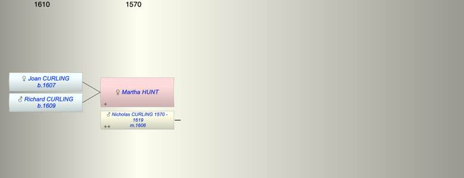

| [Index] |
| Martha HUNT |
|  |
| m. 21 Jul 1606 Nicholas CURLING (1570 - 1619) at St Peter, Thanet |
| Children (2): |
| Joan CURLING (1607 - ) |
| Richard CURLING (1609 - ) |
| Events in Martha HUNT's life | |||||
| Date | Age | Event | Place | Notes | Src |
| 21 Jul 1606 | Married Nicholas CURLING (aged 36) | St Peter, Thanet | ex FMP PR | ||
| 1607 | Birth of daughter Joan CURLING | St Laurence | Note 1 | ||
| 1609 | Birth of son Richard CURLING | St Laurence | Note 2 | ||
| 1619 | Death of husband Nicholas CURLING (aged 49) | St Laurence | buried 19 Apr 1619 ex FMP PR | ||
| Martha HUNT died (no date) | not found | ||||
| Note 1: bap St Laurence 10 May 1607 ex FMP PR |
| Note 2: bap St Laurence 28 May 1609 ex FMP PR |
| Created on a Mac™ using iFamily for Mac™ on 8 Oct 2023 |